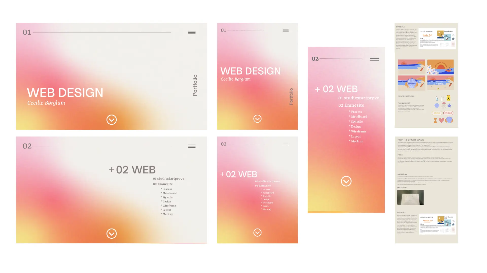
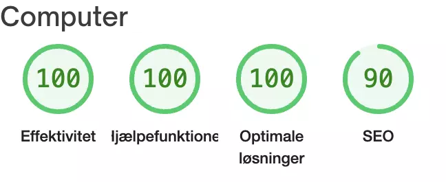
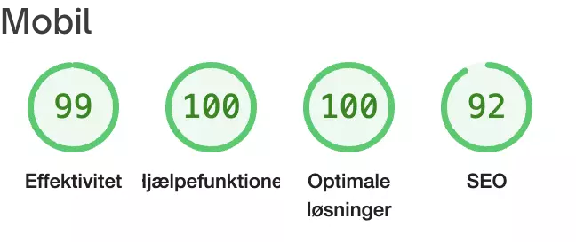
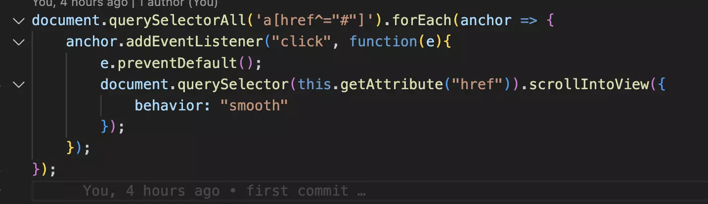
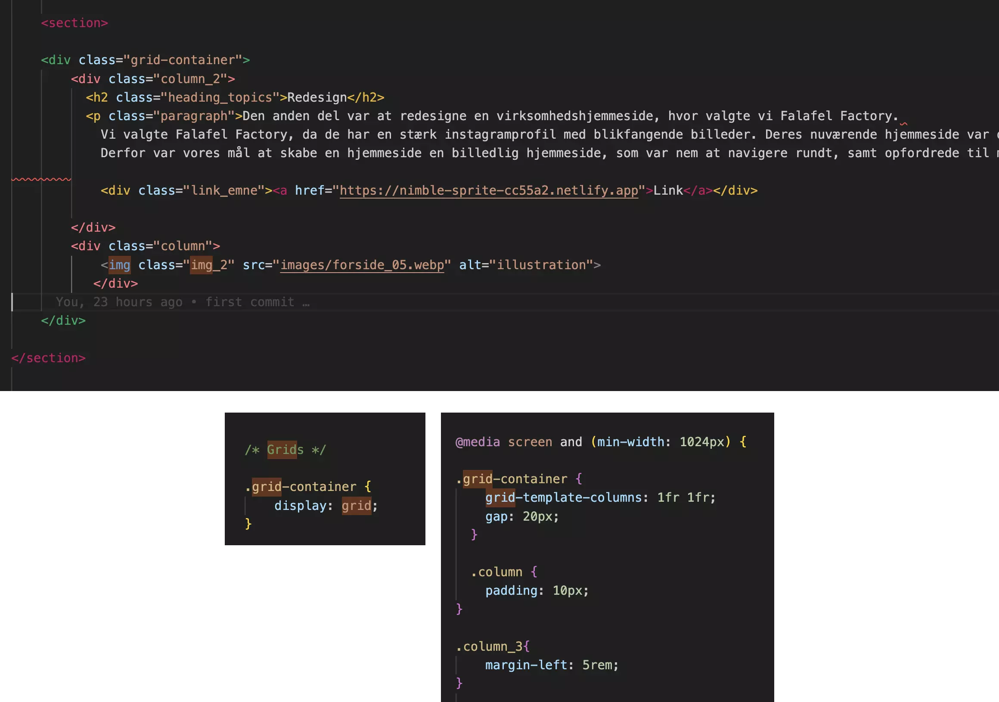

+ 06 portfolio
Website

Process
I processen af skabelse af portfoliehjemmmesiden, har jeg brugt viden og færdigheder fra de forskellige temaer. Denne proces omfatter flere vigtige trin, herunder oprettelse af et moodboard og styletile, udvikling af en interaktiv prototype, udførelse af brugerinterviews og test, samt optimering af ydeevnen ved hjælp af værktøjer som Lighthouse. Lad os dykke ned i hver af disse trin og udforske, hvordan de bidrager til at skabe en god hjemmeside, der præsenterer mit arbejde på den bedst mulige måde.
Skitsering
Design og udvikling af min portfoliehjemmeside begyndte med en skitseringsfase, hvor jeg udforskede og udviklede ideer visuelt. Jeg laver håndskitser for at få en grov fornemmelse af layoutet, placeringen af elementer og den overordnede struktur for min hjemmeside.

Moodboard / Styletile
Herefter fortsatte jeg med at udvikle et moodboard, der repræsenterede den ønskede æstetik og stemning. Jeg valgte at bruge en gradient som baggrund for at skabe en subtil og elegant overgang mellem farver. Fontvalgene til min porteføljehjemmeside inkluderede Open Sans som en sans serif font til mine overskrifter, og Rasa som en serif font til brødtekst, lister og menuer. Dette bidrog til den minimalistiske og magasininspirerede stil, som jeg ønskede at opnå.

Prototype
Næste skridt i processen var at udvikle en interaktiv prototype af min hjemmeside. Jeg brugte designværktøjer som Adobe XD, Sketch eller Figma til at oprette prototypen, hvor jeg placerede elementer, bestemte layoutet og navigationsflowet. Dette gav mig mulighed for at afprøve og finjustere brugeroplevelsen.
Tests
For at forstå brugerens behov og forventninger udførte jeg interviews med potentielle brugere. Dette gav mig indsigter i, hvad de gerne ville se på min portfoliohjemmesiden, hvilke funktioner de fandt vigtige, og hvordan de ønskede at interagere med indholdet. Disse interviews informerede min design- og udviklingsproces. Efter udviklingen af prototypen udførte jeg også brugertests, hvor jeg bad brugerne udføre specifikke opgaver på hjemmesiden. Dette hjalp mig med at identificere eventuelle brugeroplevelsesproblemer, navigationssvagheder eller funktionelle fejl, der skulle rettes, før min hjemmeside blev lanceret. Det var bl.a. 5 secondtest og five act interview. Dernæst lavede jeg en bert test, som også vil blive uddybet til eksamen.
Lighthouse
Endelig, da design- og udviklingsfasen var afsluttet, anvendte jeg Lighthouse, et automatisk testværktøj fra Google, til at optimere ydeevnen og tilgængeligheden af min hjemmeside. Dette sikrede, at min porteføljehjemmeside var hurtig, brugervenlig og opfyldte de bedste praksisser inden for ydeevne og SEO.
 Konklusion
Denne proces med skitsering, moodboard, prototype, interviews, tests og brugen af Lighthouse gav mig en struktureret tilgang til at designe og kode min porteføljehjemmeside og sikrede, at den præsenterede mit arbejde på den bedst mulige måde."
Javascript
Denne kode er skrevet i JavaScript og bruges til at tilføje en glidende rulleeffekt, når du klikker på ankerelementer (links) på en hjemmeside, der fører til en intern position på samme side.
document.querySelectorAll('a[href^="#"]') Dette linje starter en forEach-løkke, der gennemgår alle ankerelementer på siden, som har en href-attribut, der starter med #. Dette sikrer, at kun interne links bliver fanget, da de normalt bruger # som et tegn på en intern destination.
anchor.addEventListener("click", function(e){: Her tilføjes en klikhændelse til hvert ankerelement. Når der klikkes på et ankerelement, udføres den funktion, der er defineret inden i addEventListener-metoden.
e.preventDefault();: Denne linje forhindrer den normale handling af klikbegivenheden, hvilket i dette tilfælde er at hoppe til den interne destination. Ved at bruge preventDefault-metoden forhindrer vi dette og kan håndtere klikbegivenheden på vores egen måde.
document.querySelector(this.getAttribute("href")). Her bruges querySelector-metoden til at finde det element, der svarer til destinationen af det ankerelement, der blev klikket på. this.getAttribute("href") henter værdien af href-attributten for det aktuelle ankerelement.
behavior: "smooth": Dette er en del af scrollIntoView-metoden og specificerer, at rulleeffekten skal være glidende (smooth), hvilket skaber en pæn animation, når siden ruller til den interne destination.
Samlet set betyder koden, at når du klikker på et internt link (et link med # som destination), forhindres den normale handling, og i stedet ruller siden glidende til den interne destination, som angivet i ankerelementets href-attribut.
Grid
